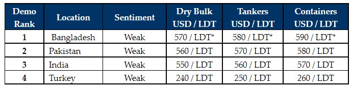

inWeekly Demolition Reports04/10/2022

Sentiments have softened across sub-continent markets once again this week, as Buyers appear increasingly reluctant to commit on freshtonnage whilst fundamentals remain so shaky – especially as the markets have witnessed across the last couple of weeks, where currencies and steel plate prices took turns in tumbling.
The Pakistani Rupee has breached historical lows and despite the odd flash of appreciation, has given Gadani Buyers extreme discomfort over the course of a torturous year of monumental declines.
Bangladesh, likewise, has suffered a currency calamity of its own, coupled with declining steel plate prices and increased limits on establishing fresh L/Cs due to a dire shortage of U.S. Dollars in the country, most Chattogram Buyers are holding back or simply unable / unwilling to offer at all on any of the freshly proposed units.
India has lost about USD 80/LDT on steel prices over the last several weeks and despite gaining a marginal USD 5/Ton this week, remains under pressure as the lowest placed of all sub-continent markets once again. The Indian Rupee has also crossed the psychologically worrying Rs. 80 mark, leaving Alang Buyers as worriedly cautious as their competitors.
Finally, the Turkish market remains depressed and unchanged for yet another week, as there are no units available to this market and at these current levels, most Owners / Cash Buyers wouldn’t commit their units to Aliaga Buyers anyways.
The supply of tonnage in the sub-continent had started to marginally improve but remains relatively strained as all freight sectors continue to perform, leaving demo markets starved of vessels once again. Prices therefore remain stranded below USD 600/LDT for another week with little chance of crossing that psychological barrier any time soon. The tendency indeed seems to suggest that levels will cool off again (perhaps down to the low USD 550s/LDT) in worrying signs for the recycling markets once again.
For week 39 of 2022, GMS demo rankings / pricing for the week are as below.

📄 Download PDF: Ship-recycling-market-insight-week-39-2022-Sounds-of-Softening.pdfSource: GMS,Inc. ,https://www.gmsinc.net/gms_new/index.php/web